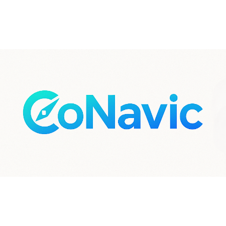

CoNavic
AI-powered browser assistant for natural language tab management, bookmark organization, and instant answers.
Key Features
- Open the assistant on any page with Ctrl+Shift+K.
- Run browser actions with clear, markdown-formatted AI responses.
- Keep workflows private with in-browser automation controls.
How to Use
- Press Ctrl+Shift+K from any tab.
- Enter a request such as “Group tabs by domain”.
- Review results and continue in the same chat session.